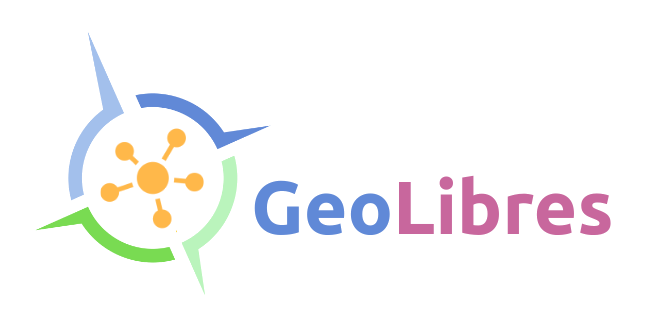

The FOSS4G path in Argentina
Once upon a time there was a man from Mendoza ...
... it was the year 2010 and he was young, a dreamer.
He traveled to Barcelona to "some conference" and everything changed.
years later...
May 30th in the city of Buenos Aires
First local conference
